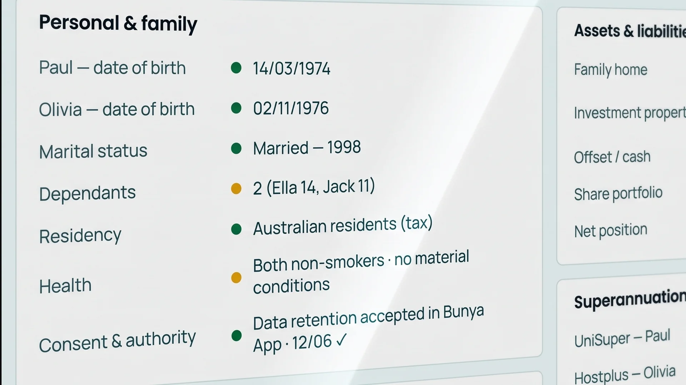

Fact find agent
The fact find starts full.
The Fact find agent prefills the fact find from what the client has already said and supplied, links every value to its source, and raises what’s missing as questions for the adviser.
Engage · Part of Bunya Command Centre · Checked by the adviser, with the client Book a demoWhy firms switch it on.
Drafted from what the client already gave you.
Statements, the discovery conversation and documents from the accountant are read once. The fact find arrives drafted, and the gaps arrive as questions, not blanks.
Every value shows where it came from.
Hover any value to see its source: the super statement, the discovery conversation or the document from the accountant.

Gaps become questions.
What’s missing is raised as a question for the adviser to ask, so the client is only asked what’s still needed.
Before. And with the agent.
- Data entry
- Typed in from statements and notes.
- Gaps
- Found late, often at paraplanning.
- Sources
- Somewhere in an inbox or a drive.
- The client
- Asked the same questions twice.
How does it work?
- 1GatherThe discovery conversation, statements and documents received are read.
- 2DraftFields are prefilled, each with its source. Gaps become questions.
- ✓ConfirmThe adviser confirms the values with the client, then approves.
Where it fits.
The Fact find agent works in the engage stage of the advice journey, and hands its work straight on.
- EngageFact find
- Strategy
- Activation
- Implementation
- Ongoing
- Across the practice
Who it helps.
Works with what you already use.
Everything the agent prepares lands on the client record, inside your firm’s own Microsoft 365.
- TeamsDiscovery conversations
- OutlookStatements sent by email
- SharePointDocuments received
- Client recordWhere the fact find lives
On the record. By design.
Switching it on.
Every agent is set up for your firm, inside the Command Centre you already have.
How getting started works- 01Agreed in your BlueprintWhich agents your firm uses, what they work from and who checks them is agreed before anything is built.
- 02Connected in your Microsoft 365The agent works inside your firm’s own tenancy, next to the client records it uses.
- 03Proven on your own workYour people test it on real clients, then every role is trained before go-live.
Questions
Straight answers.
01Does the adviser still check every value?
02Can we use our own fact-find layout?
03What happens when a value is wrong?
More agents.
See it with your firm in mind.
Book a demoOne meeting covers the demo and how your firm works today.